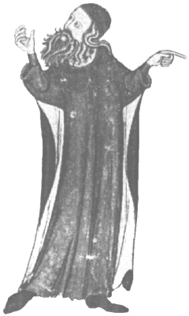
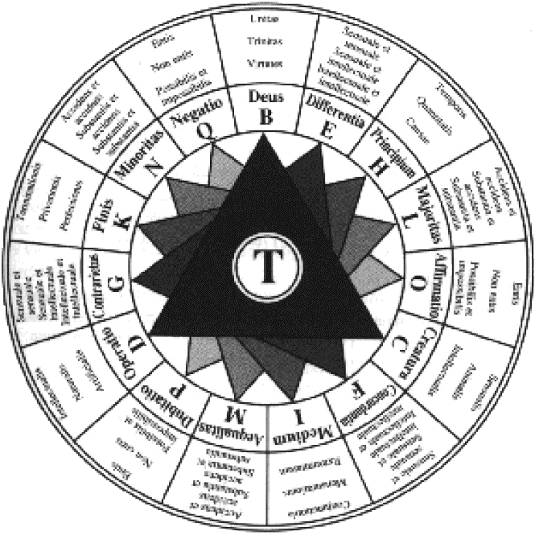

Art lul·liana
L'Ars (mot llatí que significa "art"), Ars combinatoria o Art lul·liana consisteix en un sistema
filosòfic, impulsat i creat per Ramon Llull, amb l'objectiu de permetre demostrar, a través de
l'argumentació filosòfica racional, la veritat del cristianisme als infidels mitjançant tècniques
racionals de notació simbòlica i diagrames combinatoris. Llull escrigué diverses variants i
simplificacions d'aquest sistema filosòfic, intentant plasmar les 16 figures de la seva Art.


